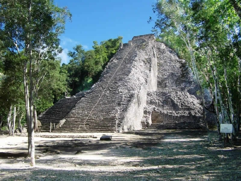
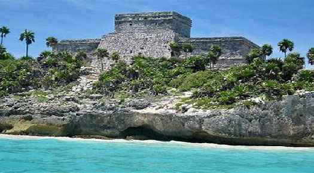

The largest caribbean island in Mexico, Cozumel, sits just on the eastern edge of the Yucatan Peninsula. Known for azure blue water, pristine coral reefs and gentle currents that sweep divers along, Cozumel is arguably one of the premier dive spots in the entire Caribbean. Settled by the Mayan originally, what once was a small fishing community has now become a mecca for watersports enthusiasts and triathletes worldwide. Cozumel measures 48 kilometers (30 miles) from north to south but only 16 kilometers (10 miles) from east to west.
Visitors will also find local beach clubs serving extremely fresh seafood and icy cold beer. This side of the island does not have electricity, so most of these locations close when the sun sets or the mosquitoes come out, whichever comes first. Recently renovated, Cozumel is home to a modern international airport, with free, easily accessible wi-fi access throughout the downtown shopping areas and all public parks. Several major grocery chains, including Commercial Mexicana, have locations on island, and carry a wide variety of national and international products, a in-store bakery and a liquor section.
 If you’re looking to strike out on your own, there are a variety of vehicles available for rent, including, automobiles, electric cars, and even tuk –tuks, (small motorized carts). Downtown San Miguel has been conveniently laid out so it’s very easy to get around. The streets are laid out, grid-like, with the Avenidas running horizontal to the ocean, and the Calles perpendicular. Avenidas run in multiples of 5, while calles to the north of downtown are even numbered and calles on the southern side are odd numbered. Most directions are given with the cross street included for reference.\
Follow Us on Social Media:


Calle Mayor s/n
San Miguel de Cozumel
Quintana Roo (Mexico)
Open: 9:00 - 21:00
Monday to Saturday
+(52) 555-123-456
E-mail:
info@scoots.com
Fax:
+(52) 555-123-457